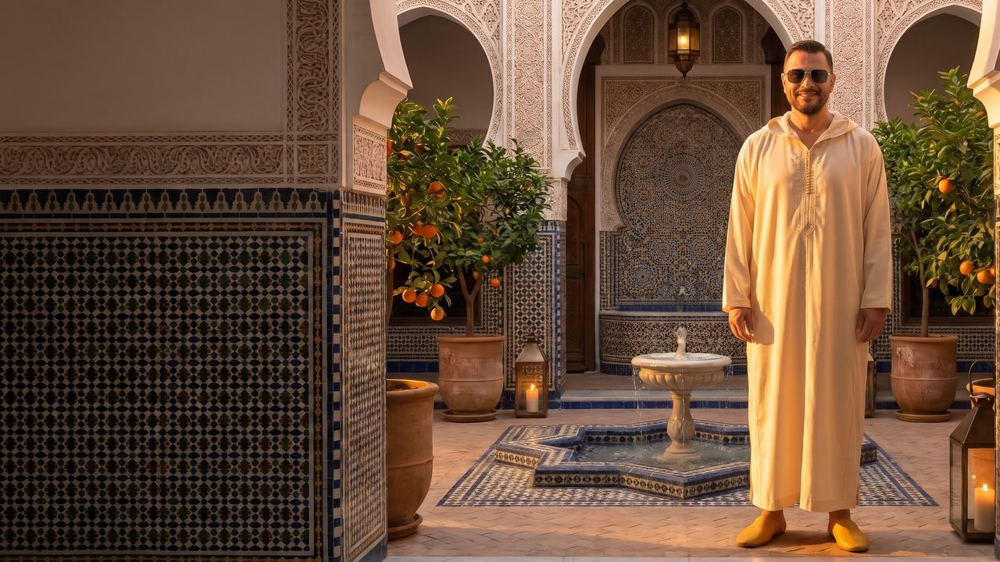
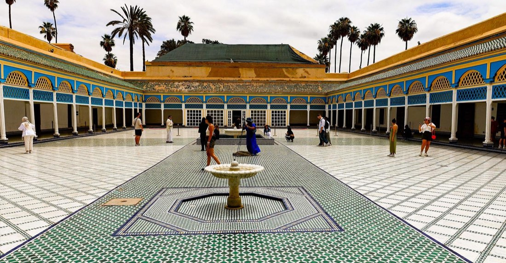
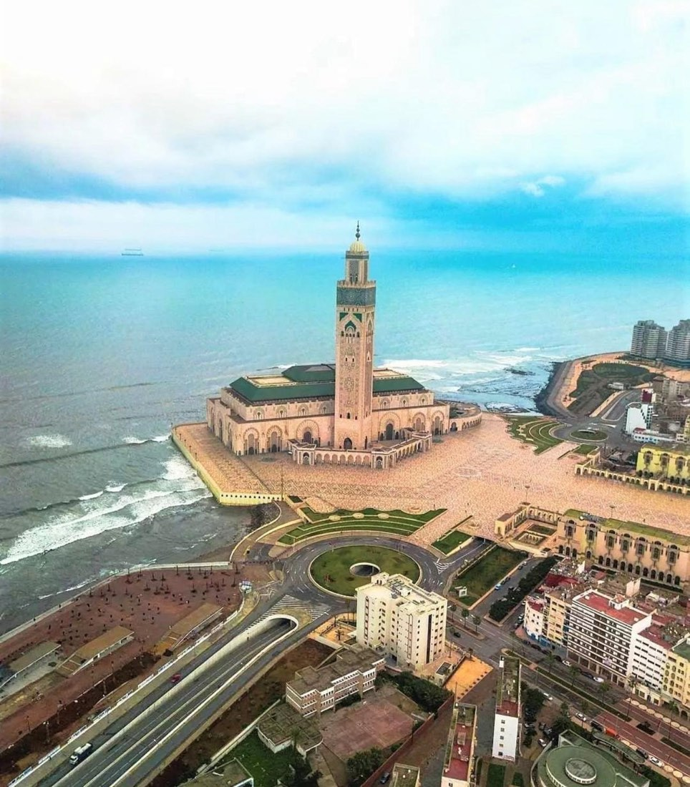

Fas
Kazablanka, Marakeş, Fes ve Fas'ın diğer rotaları.
Hangisiyle yola çıkalım?
Fas'ın Renkleri5 gün · Her hafta perşembe · €899'danKazablanka, Rabat, Meknes, Fes, Marakeş Büyük Fas Turu6 gün · 01.02.2027 · €1.750'danKazablanka, Rabat, Tanca, Şafşavan, Fes, Marakeş
Fas ve İspanya Endülüs Turu7 gün · 09.03.2027 · €1.890'danMarakeş, Kazablanka, Rabat, Tanca, Tarifa, Sevilla, Kurtuba (Cordoba), Gırnata (Granada), Malaga Büyük Fas Turu6 gün · 10.03.2027 · €1.725'danKazablanka, Rabat, Tanca, Şafşavan, Fes, Marakeş Fas ve İspanya Endülüs Turu7 gün · 02.08.2027 · €1.890'danMarakeş, Kazablanka, Rabat, Tanca, Tarifa, Sevilla, Kurtuba (Cordoba), Gırnata (Granada), Malaga Bilgi ve talep →